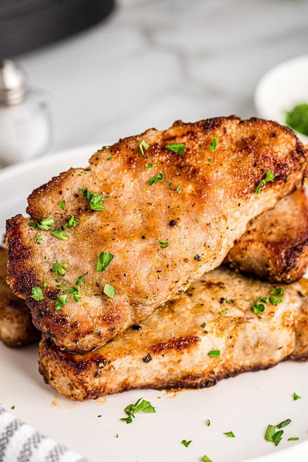

Pork Chop

Description
This is a simple pork chop recipe that we all can make in in our air fryer with only a few ingredients!
Ingredients
- Pork chop slab
- Adobo seasoning
- Cooking oil
- Tongs
- Air fryer
Steps
- Brush pork chop with cooking oil
- Season oiled pork chop with Adobo seasoning
- Pre-heat air fryer to 375 degree Fahrenheit
- Place seasoned pork chop in air fryer for 10 minutes
- After 10 minutes, flip the pork chop and cook for another 10 minutes
- Take out of air fryer to enjoy whole or cut in small chunks